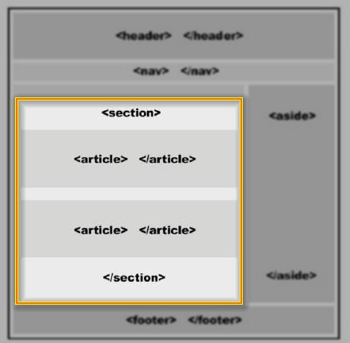
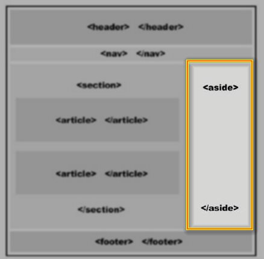
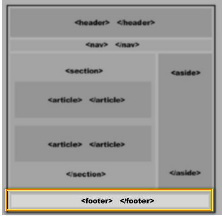

Contenido en HTML (SECTION, ASIDE, FOOTER, ARTICLE)
TEMAS
SECTION
Es la division de la informacion principal, esa informacion principal se puede encontrar
en diferentes formas, divididas en varios bloques o columnas, esas son secciones la cual se llama section.

ANSIDE
Es un diseno web llamada barra lateral, es ubicada al lado de la columna informacion principal,
seccion o columna que tiene datos relacionas a la informacion principal, elemento

FOOTER
Es un elemento mas, es cerrar el diseno para darle un final al cuerpo del documento llamado footer

ARTICLE
Todo documento, blogs estan divididos en entradas, sitios web presenta la informacion relevante divida en
partes compratiendo caracteristicas similares, llamado article